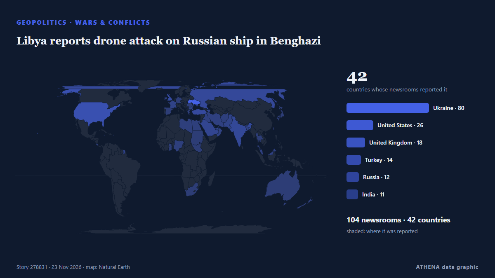

Libya reports drone attack on Russian ship in Benghazi

Authorities in divided Libya's east have reported a second ship was hit in a drone attack off Benghazi, hours after a Russian vessel was targeted at the city's port. from RTÉ News (World)
What changed 78 new reports from 46 outlets in the last 24 hours.
See the sources ›Evidence: Limited
Reported independently by 105 outlets in 42 countries since 14 Nov, first by Guardian Business; coverage is at its peak. ATHENA rates the risk high (7.1/10), driven mainly by the severity of the harm described and its geographic and sector reach. Confidence is 64% (moderate), with 105 independent outlets corroborating it and an average source reliability of 75%. Outlets by country: United States (7), Ukraine (6), United Kingdom (4). Coverage: 14 Nov to 23 Nov, 205 hours.
What changed: 78 new reports from 46 outlets in the 24 hours to 23 Nov.
First reported as: Ecuadorian fishermen who survived US boat strikes sue Trump administration
AutomatedSelected, grouped and scored by ATHENA's published method from 32 independent outlets. The headline is the outlet's own; ATHENA's sentences follow fixed patterns - no generative AI writes them. How it works →
How to read this page
- What you are reading
- 105 outlets in 42 countries reported this event. The reports below are listed in the order they appeared; each headline opens the original article. ATHENA writes none of the reports.
- Our reading
- No reading yet — We are not giving a reading yet: the reports gathered here do not all describe the same event. We prefer to say nothing than to say it on thin evidence.
- How much evidence
- Limited Treat this page as an early report.
After repeats, off-topic items and stale reports are removed, 12 of the 40 listed reports are counted; 42% of the headlines match the event.
- What this does not mean
- ATHENA measures how an event is reported, not whether it is true. This is not a forecast, a judgement on who is right, or advice.
- What would change it
- Reports from other independent outlets showing a different development, or a firm confirmation or denial from an official source.
Reading R2 · refreshed with every update of this page. ATHENA has not yet published a track record for these readings; when it does, it will be linked here.
At a glance
Selected, scored and written by ATHENA's published methodology. No editor intervenes in individual events. How this is produced ›
| 14 Nov 11:00 UTC | 2 |
|---|---|
| 14 Nov 23:00 UTC | 0 |
| 15 Nov 11:00 UTC | 0 |
| 15 Nov 23:00 UTC | 2 |
| 16 Nov 11:00 UTC | 1 |
| 16 Nov 23:00 UTC | 6 |
| 17 Nov 11:00 UTC | 11 |
| 17 Nov 23:00 UTC | 6 |
| 18 Nov 11:00 UTC | 5 |
| 18 Nov 23:00 UTC | 4 |
| 19 Nov 11:00 UTC | 9 |
| 19 Nov 23:00 UTC | 11 |
| 20 Nov 11:00 UTC | 38 |
| 20 Nov 23:00 UTC | 44 |
| 21 Nov 11:00 UTC | 47 |
| 21 Nov 23:00 UTC | 27 |
| 22 Nov 11:00 UTC | 49 |
| 22 Nov 23:00 UTC | 16 |
| 20 Nov 20:11 UTC | 5.8 |
|---|---|
| 20 Nov 21:27 UTC | 6.6 |
| 21 Nov 08:16 UTC | 5.7 |
| 21 Nov 12:08 UTC | 6.4 |
| 21 Nov 12:15 UTC | 5.8 |
| 21 Nov 16:10 UTC | 6.3 |
| 21 Nov 17:05 UTC | 5.8 |
| 21 Nov 21:35 UTC | 5.8 |
| 22 Nov 10:57 UTC | 7.5 |
| 22 Nov 11:16 UTC | 6.9 |
| 22 Nov 12:37 UTC | 7.6 |
| 22 Nov 12:45 UTC | 6.9 |
| 22 Nov 13:43 UTC | 7.6 |
| 22 Nov 14:59 UTC | 6.9 |
| 22 Nov 15:44 UTC | 7.4 |
| 22 Nov 18:59 UTC | 6.8 |
| 22 Nov 19:18 UTC | 7.4 |
| 22 Nov 21:03 UTC | 6.7 |
| 22 Nov 23:11 UTC | 7.4 |
| 23 Nov 01:15 UTC | 6.7 |
| 23 Nov 06:53 UTC | 7.1 |
Why these numbers
Importance
How widely and how prominently the story is reported.
Risk
What the reports describe, scored for possible harm. It is not a forecast.
Confidence
How well independent outlets support the story.
Shown as 64% (calculated 87%): the evidence reading is Limited, so confidence is held at moderate.
The reporting — who reported it, and when
headline as published · opens the original- Guardian Business · United KingdomEcuadorian fishermen who survived US boat strikes sue Trump administration
- Taipei Times · TaiwanUS-backed oil company flaunts Venezuelan facilities
- AzerNews · AzerbaijanUS F-35 fighter jet sends emergency signal over Gulf of Oman
- Human Rights Watch · United StatesEcuadorian Courts Expose Flaws in US High-Seas Arrests
- Ukrinform (English) · UkraineRussian aggression damages over 1,600 port facilities, hits over 260 vessels – FM Sybiha
- The Straits Times · SingaporeEcuadorean fishermen sue Trump administration over Pacific drone attack
- Courthouse News · United StatesEcuadorian fishermen sue US government over drone strikes, false imprisonment
- investingLive (ForexLive) · INTSurplus story takes the wheel in oil for now, nudging Brent lower
- Oman Observer · OmanOman Crude drops to below $90 on signs of surplus supply
- Ukrinform (English) · UkraineRussian attack on Kyiv kills two, injures one
- Ukrainska Pravda (English) · UkraineOne killed and two injured in Russian attack on Kirovohrad Oblast – photos
- Ports Europe · EURSeventh cargo ship hit by a Russian drone in Bulgaria’s EEZ. Three sank
- Kyiv Post · UkraineCargo Ship Sinks Off Bulgaria After Attack by 2 Naval Drones
- Seatrade Maritime · United KingdomSeafarers injured as two vessels struck in Black Sea off Bulgaria
- Türkiye Today · TurkeyLPG tanker Gas Husky sinks off Bulgaria, a day after BETUL 8 went down
- OilPrice.com · United KingdomBrent Stuck Near $93 as Hormuz Tanker Attacks Offset Gulf Export Surge
- Gulf News · United Arab EmiratesAll 19 Filipino crew rescued from gas tanker in Black Sea
- The Maritime Executive · United StatesOil Offload Underway from Stranded Caroline Bezengi Tanker Off Oman
- OilPrice.com · United KingdomRussian Crude Exports Hit Four-Month High
- The Straits Times · SingaporeCrew rescued from gas carrier struck in Black Sea off Bulgaria
- UPI World News · United StatesEcuadorian fishermen sue U.S. over alleged Pacific drone strike
- Arab News · Saudi ArabiaAnother commercial vessel sinks off Bulgaria’s Black Sea coast
- Ports Europe · EURBlack Sea: 15 cargo ships hit by Russian drones in 6 weeks near Romania and Bulgaria
- The Hill · United StatesEcuadorian fishermen sue Trump administration after surviving boat strike
- SeaNews Türkiye · TurkeyUkraine's Strategic Strike on Kerch Bridge Disrupts Maritime Operations
- TASS (English) · RussiaAttack on vessel operated by Emirati company leaves 11 crew members injured, one missing
- SeaNews Türkiye · TurkeyDrone Attack on Greek-Flagged Tanker EVIAPETROL V Raises Safety Concerns
- Deccan Herald · IndiaTwo Indian sailors rescued, one missing as cargo ship sinks near Bab el-Mandab
- Libya Herald · LibyaArabian Gulf Oil Company discusses HWP’s activities at Messla Field and oil recovery results
- Bunkerspot ·Keel laid on Fratelli Cosulich’s latest methanol-ready bunker tanker
- CleanTechnica · United StatesEurope’s Inland Barges Need a Cargo Plan Before an Electric Fleet Plan
- The Tico Times · Costa RicaInjured Puma Rescued on Route 32, Where Only 2 of 20 Promised Wildlife Bridges Had Been Built
- Ukrinform (English) · UkraineRussian strikes on processing plants drive up Ukraine rapeseed export prices
- The San Juan Daily Star · Puerto RicoBombed at sea, Ecuadorian fishermen sue Trump administration
- Ukrainska Pravda (English) · UkraineArtem Seledtsov, boy injured in Russian attack on Pavlohrad, dies after three weeks in critical condition
- Grist · United StatesAs black lung disease surges, the Trump administration proposes ‘deregulatory’ protections for miners
- New Straits Times · MalaysiaOil prices rise as Middle East shipping attacks counter supply surplus outlook
- Deccan Herald · IndiaGujarat ATS arrests six for stealing 8000 litres of crude oil from ONGC
- Windward Maritime AI ·Russian Vessels Have Shifted From Europe’s Cables to Its Energy Grid
- RTÉ News (World) · IrelandLibya reports drone attack on Russian ship in Benghazi